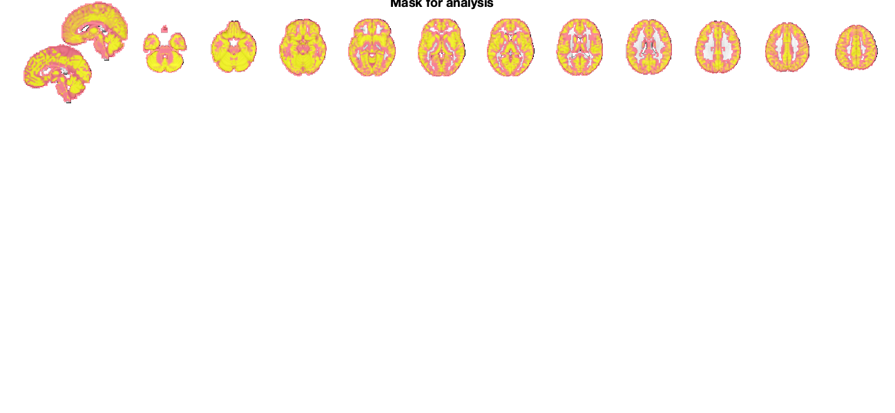
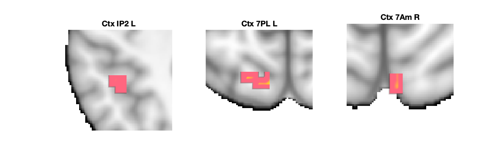
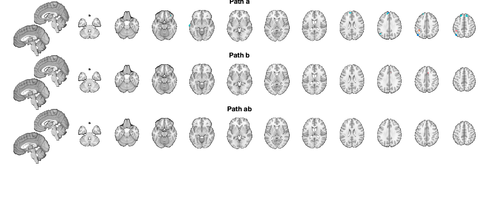
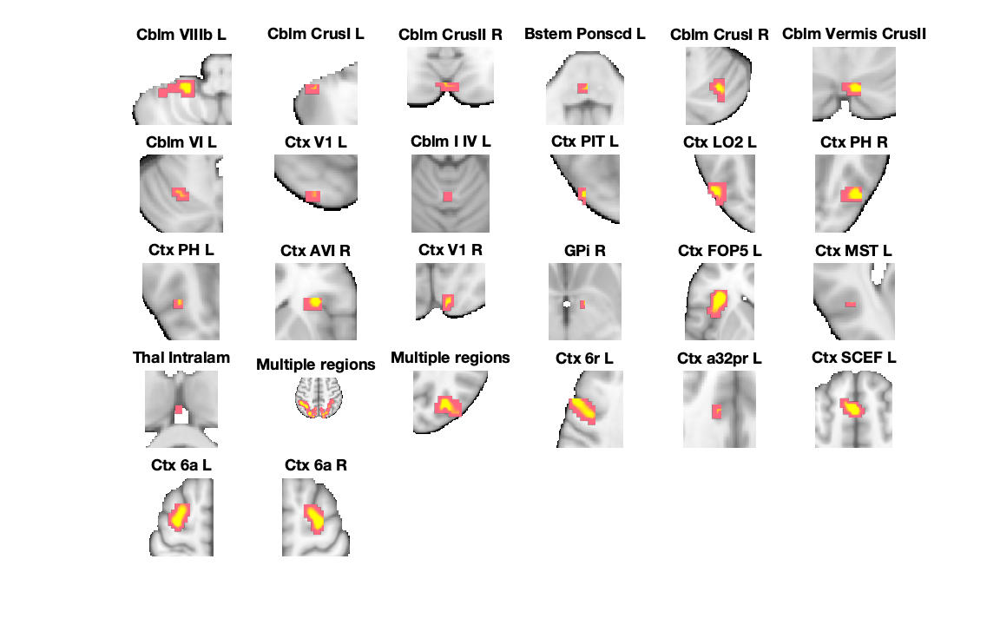
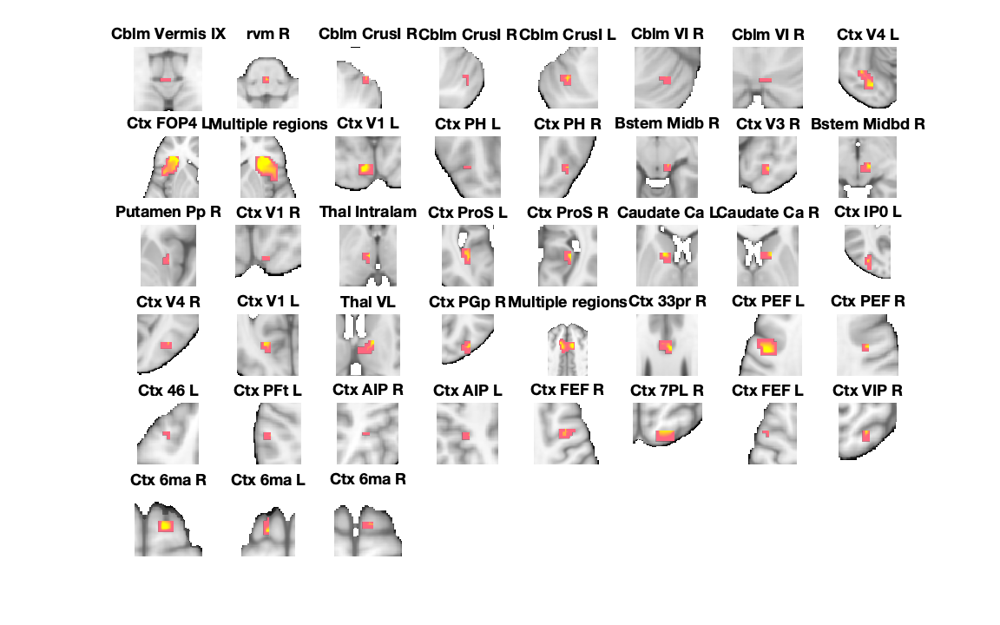
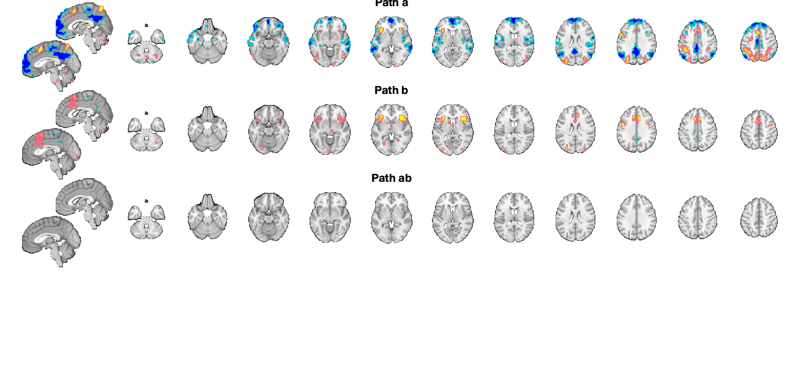

Contents
- Loading results and mask
- FDR-corrected results
- Path a results table, FDR-corrected
- Path b results table, FDR-corrected
- Path ab results table, FDR-corrected
- Combined montage plot with slices, FDR-corrected
- Uncorrected results
- Path a results table, uncorrected
- Path b results table, uncorrected
- Path ab results table, uncorrected
- Montage plot with slices, uncorrected
- Savefile information for objects with extracted data
Loading results and mask
----------------------------------------------------------------
----------------------------------------------
LOADING mediation results and images
----------------------------------------------
Calculating FDR threshold across family of tests in these images:
X-M_pvals.img
M-Y_pvals.img
X-M-Y_pvals.img
Direct calls to spm_defauts are deprecated.
Please use spm('Defaults',modality) or spm_get_defaults instead.
Total p-values: 530172
FDR threshold is 0.000023
Saving in SETUP.fdr_p_thresh
Using mask.img stored in current directory (automatically written for mediation analyses) for mask.
sampleto =
'/Volumes/spacetop_projects_social/scripts/step06_SPMsingletrial/smooth-6mm_task-social_run-cognitive_med-int-stim-actual/mask.img'
sampleto =
'X-M_pvals.img'
sampleto =
'X-M_effect.img'
sampleto =
'M-Y_pvals.img'
sampleto =
'M-Y_effect.img'
sampleto =
'X-M-Y_pvals.img'
sampleto =
'X-M-Y_effect.img'
----------------------------------------------
Loaded mediation:
----------------------------------------------
mask: '/dartfs-hpc/rc/lab/C/CANlab/modules/CanlabCore/CanlabCore/canlab_canonical_brains/Canonical_brains_surfaces/gray_matter_mask.nii'
preprocX: 0
preprocY: 0
preprocM: 0
wh_is_mediator: 'M'
cmdstring: 'Search for mediators'
TR: NaN
HPlength: []
dummyscans: [1 2]
preproc_any: 0
names: {'X' 'Y' 'M'}
outputnames: {1×25 cell}
preprochandle: []
fhandle: @(M)mediation_brain_multilev_wrapper(X,Y,M,varargin{:})
data: [1×1 struct]
inputOptions: {'nopreproc'}
fdr_p_thresh: 2.3453e-05
----------------------------------------------
Mask for analysis:
----------------------------------------------
Grouping contiguous voxels: 9 regions
sagittal montage: 4165 voxels displayed, 77215 not displayed on these slices
axial montage: 22284 voxels displayed, 59096 not displayed on these slices
 FDR-corrected results
----------------------------------------------------------------
---------------------------------------------- FDR-corrected results ---------------------------------------------- Results corrected across set of a, b, ab images using mediation_brain_corrected_threshold FDR q < .05 = p < 0.00002345
Path a results table, FDR-corrected
----------------------------------------------
Path a, FDR-corrected q < .05
----------------------------------------------
Image 1
13 contig. clusters, sizes 3 to 40
Positive effect: 54 voxels, min p-value: 0.00000062
Negative effect: 174 voxels, min p-value: 0.00000030
____________________________________________________________________________________________________________________________________________
Positive Effects
sampleto =
'/Users/h/Documents/MATLAB/CanlabCore/CanlabCore/canlab_canonical_brains/Canonical_brains_surfaces/brainmask.nii'
Region Volume XYZ maxZ modal_label_descriptions Perc_covered_by_label Atlas_regions_covered region_index
_____________ ______ _________________ _______ ____________________________ _____________________ _____________________ ____________
{'Ctx_7PL_L'} 1696 -11 -68 57 0.15054 {'Cortex_Dorsal_AttentionA'} 24 0 2
{'Ctx_7Am_R'} 400 5 -65 62 0.2082 {'Cortex_Dorsal_AttentionB'} 76 0 3
{'Ctx_IP2_L'} 1328 -43 -44 46 0.1602 {'Cortex_Fronto_ParietalA' } 36 1 1
Negative Effects
Region Volume XYZ maxZ modal_label_descriptions Perc_covered_by_label Atlas_regions_covered region_index
______________ ______ _________________ ________ ___________________________ _____________________ _____________________ ____________
{'Ctx_9a_R' } 384 16 61 27 -0.10426 {'Cortex_Default_ModeA' } 94 0 9
{'Ctx_31pv_L'} 512 -5 -39 38 -0.17641 {'Cortex_Default_ModeA' } 48 0 10
{'Ctx_TE1a_L'} 864 -67 -17 -8 -0.13818 {'Cortex_Default_ModeB' } 22 0 5
{'Ctx_9m_L' } 1968 -8 58 30 -0.19982 {'Cortex_Default_ModeB' } 52 0 6
{'Ctx_PGi_L' } 1360 -46 -60 30 -0.15098 {'Cortex_Default_ModeB' } 66 1 8
{'Ctx_8BL_L' } 1352 -16 42 48 -0.1413 {'Cortex_Default_ModeB' } 46 0 12
{'Ctx_8BL_R' } 1504 16 39 51 -0.17785 {'Cortex_Default_ModeB' } 81 0 13
{'Ctx_a47r_R'} 360 38 42 -11 -0.10374 {'Cortex_Fronto_ParietalB'} 87 0 4
{'Ctx_PFm_L' } 288 -56 -63 27 -0.13149 {'Cortex_Fronto_ParietalB'} 22 0 7
{'Ctx_PFm_L' } 2024 -46 -68 43 -0.18698 {'Cortex_Fronto_ParietalB'} 58 0 11
____________________________________________________________________________________________________________________________________________
Regions labeled by reference atlas CANlab_2018_combined
Volume: Volume of contiguous region in cubic mm.
MaxZ: Signed max over p
Atlas_regions_covered: Number of reference atlas regions covered at least 25% by the region. This relates to whether the region covers
multiple reference atlas regions
Region: Best reference atlas label, defined as reference region with highest number of in-region voxels. Regions covering >25% of >5
regions labeled as "Multiple regions"
Perc_covered_by_label: Percentage of the region covered by the label.
Ref_region_perc: Percentage of the label region within the target region.
modal_atlas_index: Index number of label region in reference atlas
all_regions_covered: All regions covered >5% in descending order of importance
For example, if a region is labeled 'TE1a' and Perc_covered_by_label = 8, Ref_region_perc = 38, and Atlas_regions_covered = 17, this means
that 8% of the region's voxels are labeled TE1a, which is the highest percentage among reference label regions. 38% of the region TE1a is
covered by the region. However, the region covers at least 25% of 17 distinct labeled reference regions.
References for atlases:
Beliveau, Vincent, Claus Svarer, Vibe G. Frokjaer, Gitte M. Knudsen, Douglas N. Greve, and Patrick M. Fisher. 2015. “Functional
Connectivity of the Dorsal and Median Raphe Nuclei at Rest.” NeuroImage 116 (August): 187–95.
Bär, Karl-Jürgen, Feliberto de la Cruz, Andy Schumann, Stefanie Koehler, Heinrich Sauer, Hugo Critchley, and Gerd Wagner. 2016. ?Functional
Connectivity and Network Analysis of Midbrain and Brainstem Nuclei.? NeuroImage 134 (July):53?63.
Diedrichsen, Jörn, Joshua H. Balsters, Jonathan Flavell, Emma Cussans, and Narender Ramnani. 2009. A Probabilistic MR Atlas of the Human
Cerebellum. NeuroImage 46 (1): 39?46.
Fairhurst, Merle, Katja Wiech, Paul Dunckley, and Irene Tracey. 2007. ?Anticipatory Brainstem Activity Predicts Neural Processing of Pain
in Humans.? Pain 128 (1-2):101?10.
Fan 2016 Cerebral Cortex; doi:10.1093/cercor/bhw157
Glasser, Matthew F., Timothy S. Coalson, Emma C. Robinson, Carl D. Hacker, John Harwell, Essa Yacoub, Kamil Ugurbil, et al. 2016. A
Multi-Modal Parcellation of Human Cerebral Cortex. Nature 536 (7615): 171?78.
Keren, Noam I., Carl T. Lozar, Kelly C. Harris, Paul S. Morgan, and Mark A. Eckert. 2009. “In Vivo Mapping of the Human Locus Coeruleus.”
NeuroImage 47 (4): 1261–67.
Keuken, M. C., P-L Bazin, L. Crown, J. Hootsmans, A. Laufer, C. Müller-Axt, R. Sier, et al. 2014. “Quantifying Inter-Individual Anatomical
Variability in the Subcortex Using 7 T Structural MRI.” NeuroImage 94 (July): 40–46.
Krauth A, Blanc R, Poveda A, Jeanmonod D, Morel A, Székely G. (2010) A mean three-dimensional atlas of the human thalamus: generation from
multiple histological data. Neuroimage. 2010 Feb 1;49(3):2053-62. Jakab A, Blanc R, Berényi EL, Székely G. (2012) Generation of
Individualized Thalamus Target Maps by Using Statistical Shape Models and Thalamocortical Tractography. AJNR Am J Neuroradiol. 33:
2110-2116, doi: 10.3174/ajnr.A3140
Nash, Paul G., Vaughan G. Macefield, Iven J. Klineberg, Greg M. Murray, and Luke A. Henderson. 2009. ?Differential Activation of the Human
Trigeminal Nuclear Complex by Noxious and Non-Noxious Orofacial Stimulation.? Human Brain Mapping 30 (11):3772?82.
Pauli 2018 Bioarxiv: CIT168 from Human Connectome Project data
Pauli, Wolfgang M., Amanda N. Nili, and J. Michael Tyszka. 2018. ?A High-Resolution Probabilistic in Vivo Atlas of Human Subcortical Brain
Nuclei.? Scientific Data 5 (April): 180063.
Pauli, Wolfgang M., Randall C. O?Reilly, Tal Yarkoni, and Tor D. Wager. 2016. ?Regional Specialization within the Human Striatum for
Diverse Psychological Functions.? Proceedings of the National Academy of Sciences of the United States of America 113 (7): 1907?12.
Sclocco, Roberta, Florian Beissner, Gaelle Desbordes, Jonathan R. Polimeni, Lawrence L. Wald, Norman W. Kettner, Jieun Kim, et al. 2016.
?Neuroimaging Brainstem Circuitry Supporting Cardiovagal Response to Pain: A Combined Heart Rate Variability/ultrahigh-Field (7 T)
Functional Magnetic Resonance Imaging Study.? Philosophical Transactions. Series A, Mathematical, Physical, and Engineering Sciences 374
(2067). rsta.royalsocietypublishing.org. https://doi.org/10.1098/rsta.2015.0189.
Shen, X., F. Tokoglu, X. Papademetris, and R. T. Constable. 2013. “Groupwise Whole-Brain Parcellation from Resting-State fMRI Data for
Network Node Identification.” NeuroImage 82 (November): 403–15.
Zambreanu, L., R. G. Wise, J. C. W. Brooks, G. D. Iannetti, and I. Tracey. 2005. ?A Role for the Brainstem in Central Sensitisation in
Humans. Evidence from Functional Magnetic Resonance Imaging.? Pain 114 (3):397?407.
Note: Region object r(i).title contains full list of reference atlas regions covered by each cluster.
____________________________________________________________________________________________________________________________________________
 Path b results table, FDR-corrected
----------------------------------------------
Path b, FDR-corrected q < .05
----------------------------------------------
Image 1
1 contig. clusters, sizes 13 to 13
Positive effect: 13 voxels, min p-value: 0.00000014
Negative effect: 0 voxels, min p-value: 0.00172015
Grouping contiguous voxels: 1 regions
____________________________________________________________________________________________________________________________________________
Positive Effects
sampleto =
'/Users/h/Documents/MATLAB/CanlabCore/CanlabCore/canlab_canonical_brains/Canonical_brains_surfaces/brainmask.nii'
Region Volume XYZ maxZ modal_label_descriptions Perc_covered_by_label Atlas_regions_covered region_index
_______________ ______ ______________ ______ _____________________________ _____________________ _____________________ ____________
{'Ctx_a32pr_R'} 1024 11 23 38 3.4295 {'Cortex_Ventral_AttentionB'} 45 1 1
Negative Effects
No regions to display
____________________________________________________________________________________________________________________________________________
Regions labeled by reference atlas CANlab_2018_combined
Volume: Volume of contiguous region in cubic mm.
MaxZ: Signed max over p
Atlas_regions_covered: Number of reference atlas regions covered at least 25% by the region. This relates to whether the region covers
multiple reference atlas regions
Region: Best reference atlas label, defined as reference region with highest number of in-region voxels. Regions covering >25% of >5
regions labeled as "Multiple regions"
Perc_covered_by_label: Percentage of the region covered by the label.
Ref_region_perc: Percentage of the label region within the target region.
modal_atlas_index: Index number of label region in reference atlas
all_regions_covered: All regions covered >5% in descending order of importance
For example, if a region is labeled 'TE1a' and Perc_covered_by_label = 8, Ref_region_perc = 38, and Atlas_regions_covered = 17, this means
that 8% of the region's voxels are labeled TE1a, which is the highest percentage among reference label regions. 38% of the region TE1a is
covered by the region. However, the region covers at least 25% of 17 distinct labeled reference regions.
References for atlases:
Beliveau, Vincent, Claus Svarer, Vibe G. Frokjaer, Gitte M. Knudsen, Douglas N. Greve, and Patrick M. Fisher. 2015. “Functional
Connectivity of the Dorsal and Median Raphe Nuclei at Rest.” NeuroImage 116 (August): 187–95.
Bär, Karl-Jürgen, Feliberto de la Cruz, Andy Schumann, Stefanie Koehler, Heinrich Sauer, Hugo Critchley, and Gerd Wagner. 2016. ?Functional
Connectivity and Network Analysis of Midbrain and Brainstem Nuclei.? NeuroImage 134 (July):53?63.
Diedrichsen, Jörn, Joshua H. Balsters, Jonathan Flavell, Emma Cussans, and Narender Ramnani. 2009. A Probabilistic MR Atlas of the Human
Cerebellum. NeuroImage 46 (1): 39?46.
Fairhurst, Merle, Katja Wiech, Paul Dunckley, and Irene Tracey. 2007. ?Anticipatory Brainstem Activity Predicts Neural Processing of Pain
in Humans.? Pain 128 (1-2):101?10.
Fan 2016 Cerebral Cortex; doi:10.1093/cercor/bhw157
Glasser, Matthew F., Timothy S. Coalson, Emma C. Robinson, Carl D. Hacker, John Harwell, Essa Yacoub, Kamil Ugurbil, et al. 2016. A
Multi-Modal Parcellation of Human Cerebral Cortex. Nature 536 (7615): 171?78.
Keren, Noam I., Carl T. Lozar, Kelly C. Harris, Paul S. Morgan, and Mark A. Eckert. 2009. “In Vivo Mapping of the Human Locus Coeruleus.”
NeuroImage 47 (4): 1261–67.
Keuken, M. C., P-L Bazin, L. Crown, J. Hootsmans, A. Laufer, C. Müller-Axt, R. Sier, et al. 2014. “Quantifying Inter-Individual Anatomical
Variability in the Subcortex Using 7 T Structural MRI.” NeuroImage 94 (July): 40–46.
Krauth A, Blanc R, Poveda A, Jeanmonod D, Morel A, Székely G. (2010) A mean three-dimensional atlas of the human thalamus: generation from
multiple histological data. Neuroimage. 2010 Feb 1;49(3):2053-62. Jakab A, Blanc R, Berényi EL, Székely G. (2012) Generation of
Individualized Thalamus Target Maps by Using Statistical Shape Models and Thalamocortical Tractography. AJNR Am J Neuroradiol. 33:
2110-2116, doi: 10.3174/ajnr.A3140
Nash, Paul G., Vaughan G. Macefield, Iven J. Klineberg, Greg M. Murray, and Luke A. Henderson. 2009. ?Differential Activation of the Human
Trigeminal Nuclear Complex by Noxious and Non-Noxious Orofacial Stimulation.? Human Brain Mapping 30 (11):3772?82.
Pauli 2018 Bioarxiv: CIT168 from Human Connectome Project data
Pauli, Wolfgang M., Amanda N. Nili, and J. Michael Tyszka. 2018. ?A High-Resolution Probabilistic in Vivo Atlas of Human Subcortical Brain
Nuclei.? Scientific Data 5 (April): 180063.
Pauli, Wolfgang M., Randall C. O?Reilly, Tal Yarkoni, and Tor D. Wager. 2016. ?Regional Specialization within the Human Striatum for
Diverse Psychological Functions.? Proceedings of the National Academy of Sciences of the United States of America 113 (7): 1907?12.
Sclocco, Roberta, Florian Beissner, Gaelle Desbordes, Jonathan R. Polimeni, Lawrence L. Wald, Norman W. Kettner, Jieun Kim, et al. 2016.
?Neuroimaging Brainstem Circuitry Supporting Cardiovagal Response to Pain: A Combined Heart Rate Variability/ultrahigh-Field (7 T)
Functional Magnetic Resonance Imaging Study.? Philosophical Transactions. Series A, Mathematical, Physical, and Engineering Sciences 374
(2067). rsta.royalsocietypublishing.org. https://doi.org/10.1098/rsta.2015.0189.
Shen, X., F. Tokoglu, X. Papademetris, and R. T. Constable. 2013. “Groupwise Whole-Brain Parcellation from Resting-State fMRI Data for
Network Node Identification.” NeuroImage 82 (November): 403–15.
Zambreanu, L., R. G. Wise, J. C. W. Brooks, G. D. Iannetti, and I. Tracey. 2005. ?A Role for the Brainstem in Central Sensitisation in
Humans. Evidence from Functional Magnetic Resonance Imaging.? Pain 114 (3):397?407.
Note: Region object r(i).title contains full list of reference atlas regions covered by each cluster.
____________________________________________________________________________________________________________________________________________
Path ab results table, FDR-corrected
---------------------------------------------- Path ab, FDR-corrected q < .05 ---------------------------------------------- Image 1 0 contig. clusters, sizes to Positive effect: 0 voxels, min p-value: 0.01280312 Negative effect: 0 voxels, min p-value: 0.03925417 Grouping contiguous voxels: 0 regions ____________________________________________________________________________________________________________________________________________ Positive Effects No regions to display Negative Effects No regions to display ____________________________________________________________________________________________________________________________________________
Combined montage plot with slices, FDR-corrected
Grouping contiguous voxels: 13 regions sagittal montage: 0 voxels displayed, 228 not displayed on these slices axial montage: 63 voxels displayed, 165 not displayed on these slices Grouping contiguous voxels: 1 regions sagittal montage: 0 voxels displayed, 13 not displayed on these slices axial montage: 6 voxels displayed, 7 not displayed on these slices Grouping contiguous voxels: 0 regions
Uncorrected results
----------------------------------------------------------------
---------------------------------------------- Uncorrected (p < .01) results ----------------------------------------------
Path a results table, uncorrected
----------------------------------------------
Path a, Uncorrected (p < .01)
----------------------------------------------
Image 1
63 contig. clusters, sizes 3 to 2014
Positive effect: 2892 voxels, min p-value: 0.00000062
Negative effect: 6522 voxels, min p-value: 0.00000030
Grouping contiguous voxels: 63 regions
____________________________________________________________________________________________________________________________________________
Positive Effects
sampleto =
'/Users/h/Documents/MATLAB/CanlabCore/CanlabCore/canlab_canonical_brains/Canonical_brains_surfaces/brainmask.nii'
Region Volume XYZ maxZ modal_label_descriptions Perc_covered_by_label Atlas_regions_covered region_index
______________________ ______ _________________ ________ _____________________________ _____________________ _____________________ ____________
{'GPi_R' } 360 11 -1 -6 0.09994 {'Basal_ganglia' } 67 0 16
{'Bstem_Ponscd_L' } 488 0 -36 -41 0.11684 {'Brainstem' } 62 1 4
{'Cblm_VIIIb_L' } 2272 -24 -41 -46 0.15442 {'Cerebellum' } 39 0 1
{'Cblm_CrusI_L' } 640 -43 -47 -43 0.07725 {'Cerebellum' } 59 0 2
{'Cblm_CrusII_R' } 1096 3 -79 -41 0.096329 {'Cerebellum' } 38 0 3
{'Cblm_CrusI_R' } 1328 35 -63 -30 0.090765 {'Cerebellum' } 59 0 5
{'Cblm_Vermis_CrusII'} 1072 8 -73 -27 0.085095 {'Cerebellum' } 34 1 6
{'Cblm_VI_L' } 1000 -27 -60 -30 0.087222 {'Cerebellum' } 77 0 7
{'Cblm_I_IV_L' } 352 0 -57 -16 0.065259 {'Cerebellum' } 43 0 9
{'Multiple regions' } 8072 35 -79 27 0.12302 {'Cortex_Default_ModeC' } 28 7 21
{'Ctx_PH_R' } 1960 48 -65 -8 0.13214 {'Cortex_Dorsal_AttentionA' } 56 2 12
{'Ctx_PH_L' } 640 -43 -65 -8 0.062662 {'Cortex_Dorsal_AttentionA' } 76 0 13
{'Multiple regions' } 56504 -11 -63 48 0.20982 {'Cortex_Dorsal_AttentionB' } 4 28 20
{'Ctx_6a_L' } 8152 -27 -1 59 0.1612 {'Cortex_Dorsal_AttentionB' } 33 2 25
{'Ctx_6a_R' } 5872 27 -1 59 0.14186 {'Cortex_Dorsal_AttentionB' } 34 2 26
{'Ctx_FOP5_L' } 4144 -32 26 3 0.19807 {'Cortex_Ventral_AttentionA'} 28 2 17
{'Ctx_6r_L' } 4736 -48 4 35 0.15165 {'Cortex_Ventral_AttentionA'} 22 3 22
{'Ctx_SCEF_L' } 9160 -3 15 48 0.16062 {'Cortex_Ventral_AttentionA'} 17 3 24
{'Ctx_AVI_R' } 1928 35 28 0 0.15415 {'Cortex_Ventral_AttentionB'} 61 2 14
{'Ctx_a32pr_L' } 384 -11 23 30 0.086767 {'Cortex_Ventral_AttentionB'} 42 0 23
{'Ctx_PIT_L' } 488 -40 -82 -16 0.1226 {'Cortex_Visual_Central' } 75 1 10
{'Ctx_LO2_L' } 2976 -51 -73 -8 0.13445 {'Cortex_Visual_Central' } 11 1 11
{'Ctx_MST_L' } 336 -43 -65 3 0.054651 {'Cortex_Visual_Central' } 50 1 18
{'Ctx_V1_L' } 560 -24 -92 -16 0.15257 {'Cortex_Visual_Peripheral' } 51 0 8
{'Ctx_V1_R' } 1416 14 -95 -3 0.12475 {'Cortex_Visual_Peripheral' } 73 0 15
{'Thal_Intralam' } 464 3 -22 13 0.14582 {'Diencephalon' } 19 0 19
Negative Effects
Region Volume XYZ maxZ modal_label_descriptions Perc_covered_by_label Atlas_regions_covered region_index
____________________ ______ _________________ _________ _____________________________ _____________________ _____________________ ____________
{'Amygdala_LB_' } 576 19 -4 -19 -0.13814 {'Amygdala' } 33 0 35
{'Cau_L' } 496 -32 -28 -8 -0.078869 {'Basal_ganglia' } 56 0 41
{'Putamen_Pp_L' } 360 -32 -17 8 -0.083955 {'Basal_ganglia' } 31 0 48
{'Cau_L' } 288 -13 -22 30 -0.069952 {'Basal_ganglia' } 11 0 54
{'Cblm_CrusII_L' } 6336 -27 -79 -38 -0.10846 {'Cerebellum' } 56 0 27
{'Cblm_CrusII_R' } 3704 30 -82 -38 -0.10444 {'Cerebellum' } 73 0 28
{'Ctx_TE1a_R' } 1232 59 -9 -30 -0.061202 {'Cortex_Default_ModeA' } 68 0 30
{'Ctx_10v_R' } 584 0 37 -22 -0.11783 {'Cortex_Default_ModeA' } 42 0 34
{'Multiple regions'} 65472 -3 53 27 -0.22358 {'Cortex_Default_ModeA' } 8 22 39
{'Multiple regions'} 16864 -62 -9 -11 -0.14159 {'Cortex_Default_ModeB' } 18 6 29
{'Ctx_45_L' } 2424 -54 28 8 -0.12037 {'Cortex_Default_ModeB' } 47 2 46
{'Ctx_8Av_L' } 5384 -40 18 48 -0.12536 {'Cortex_Default_ModeB' } 46 1 56
{'Ctx_H_L' } 1688 -32 -12 -19 -0.13106 {'Cortex_Default_ModeC' } 25 0 32
{'Ctx_H_R' } 528 27 -14 -19 -0.11312 {'Cortex_Default_ModeC' } 52 0 36
{'Ctx_PGi_R' } 10768 51 -60 32 -0.15277 {'Cortex_Default_ModeC' } 26 3 51
{'Ctx_2_L' } 408 -32 -36 59 -0.045473 {'Cortex_Dorsal_AttentionB' } 47 0 61
{'Ctx_8C_R' } 2384 35 15 35 -0.060234 {'Cortex_Fronto_ParietalA' } 38 1 55
{'Ctx_a47r_L' } 8104 -43 34 -14 -0.13702 {'Cortex_Fronto_ParietalB' } 35 3 33
{'Ctx_a47r_R' } 7184 40 42 -11 -0.12714 {'Cortex_Fronto_ParietalB' } 35 4 38
{'Ctx_a10p_L' } 2056 -29 53 -3 -0.10012 {'Cortex_Fronto_ParietalB' } 24 1 42
{'Ctx_TE1p_L' } 8752 -59 -44 3 -0.16121 {'Cortex_Fronto_ParietalB' } 14 4 44
{'Ctx_p10p_R' } 976 24 50 5 -0.063679 {'Cortex_Fronto_ParietalB' } 20 0 47
{'Ctx_PFm_L' } 16408 -48 -63 35 -0.18698 {'Cortex_Fronto_ParietalB' } 25 4 50
{'Multiple regions'} 29984 0 -41 38 -0.20057 {'Cortex_SomatomotorA' } 7 18 52
{'Ctx_4_R' } 408 48 -4 30 -0.049715 {'Cortex_SomatomotorA' } 25 0 53
{'Ctx_4_L' } 560 -40 -17 43 -0.072437 {'Cortex_SomatomotorA' } 51 0 57
{'Ctx_4_L' } 6272 -32 -22 65 -0.15464 {'Cortex_SomatomotorA' } 29 0 60
{'Ctx_4_R' } 3160 19 -28 67 -0.094401 {'Cortex_SomatomotorA' } 34 0 62
{'Ctx_5L_L' } 456 -13 -41 65 -0.049307 {'Cortex_SomatomotorA' } 46 0 63
{'Multiple regions'} 15352 -48 -9 13 -0.13634 {'Cortex_SomatomotorB' } 12 14 43
{'Ctx_TA2_R' } 480 56 7 -3 -0.092138 {'Cortex_SomatomotorB' } 55 0 45
{'Ctx_6v_R' } 384 59 -4 43 -0.088844 {'Cortex_SomatomotorB' } 42 0 58
{'Ctx_STGa_R' } 976 56 10 -19 -0.075033 {'Cortex_Temporal_Parietal' } 65 1 31
{'Multiple regions'} 35752 59 -25 3 -0.14938 {'Cortex_Temporal_Parietal' } 9 21 37
{'Ctx_Pir_R' } 432 32 4 -14 -0.080244 {'Cortex_Ventral_AttentionA'} 57 0 40
{'Ctx_PFcm_L' } 464 -48 -33 13 -0.096438 {'Cortex_Ventral_AttentionA'} 33 0 49
{'Ctx_p24pr_R' } 504 8 -1 40 -0.075514 {'Cortex_Ventral_AttentionA'} 57 0 59
____________________________________________________________________________________________________________________________________________
Regions labeled by reference atlas CANlab_2018_combined
Volume: Volume of contiguous region in cubic mm.
MaxZ: Signed max over p
Atlas_regions_covered: Number of reference atlas regions covered at least 25% by the region. This relates to whether the region covers
multiple reference atlas regions
Region: Best reference atlas label, defined as reference region with highest number of in-region voxels. Regions covering >25% of >5
regions labeled as "Multiple regions"
Perc_covered_by_label: Percentage of the region covered by the label.
Ref_region_perc: Percentage of the label region within the target region.
modal_atlas_index: Index number of label region in reference atlas
all_regions_covered: All regions covered >5% in descending order of importance
For example, if a region is labeled 'TE1a' and Perc_covered_by_label = 8, Ref_region_perc = 38, and Atlas_regions_covered = 17, this means
that 8% of the region's voxels are labeled TE1a, which is the highest percentage among reference label regions. 38% of the region TE1a is
covered by the region. However, the region covers at least 25% of 17 distinct labeled reference regions.
References for atlases:
Beliveau, Vincent, Claus Svarer, Vibe G. Frokjaer, Gitte M. Knudsen, Douglas N. Greve, and Patrick M. Fisher. 2015. “Functional
Connectivity of the Dorsal and Median Raphe Nuclei at Rest.” NeuroImage 116 (August): 187–95.
Bär, Karl-Jürgen, Feliberto de la Cruz, Andy Schumann, Stefanie Koehler, Heinrich Sauer, Hugo Critchley, and Gerd Wagner. 2016. ?Functional
Connectivity and Network Analysis of Midbrain and Brainstem Nuclei.? NeuroImage 134 (July):53?63.
Diedrichsen, Jörn, Joshua H. Balsters, Jonathan Flavell, Emma Cussans, and Narender Ramnani. 2009. A Probabilistic MR Atlas of the Human
Cerebellum. NeuroImage 46 (1): 39?46.
Fairhurst, Merle, Katja Wiech, Paul Dunckley, and Irene Tracey. 2007. ?Anticipatory Brainstem Activity Predicts Neural Processing of Pain
in Humans.? Pain 128 (1-2):101?10.
Fan 2016 Cerebral Cortex; doi:10.1093/cercor/bhw157
Glasser, Matthew F., Timothy S. Coalson, Emma C. Robinson, Carl D. Hacker, John Harwell, Essa Yacoub, Kamil Ugurbil, et al. 2016. A
Multi-Modal Parcellation of Human Cerebral Cortex. Nature 536 (7615): 171?78.
Keren, Noam I., Carl T. Lozar, Kelly C. Harris, Paul S. Morgan, and Mark A. Eckert. 2009. “In Vivo Mapping of the Human Locus Coeruleus.”
NeuroImage 47 (4): 1261–67.
Keuken, M. C., P-L Bazin, L. Crown, J. Hootsmans, A. Laufer, C. Müller-Axt, R. Sier, et al. 2014. “Quantifying Inter-Individual Anatomical
Variability in the Subcortex Using 7 T Structural MRI.” NeuroImage 94 (July): 40–46.
Krauth A, Blanc R, Poveda A, Jeanmonod D, Morel A, Székely G. (2010) A mean three-dimensional atlas of the human thalamus: generation from
multiple histological data. Neuroimage. 2010 Feb 1;49(3):2053-62. Jakab A, Blanc R, Berényi EL, Székely G. (2012) Generation of
Individualized Thalamus Target Maps by Using Statistical Shape Models and Thalamocortical Tractography. AJNR Am J Neuroradiol. 33:
2110-2116, doi: 10.3174/ajnr.A3140
Nash, Paul G., Vaughan G. Macefield, Iven J. Klineberg, Greg M. Murray, and Luke A. Henderson. 2009. ?Differential Activation of the Human
Trigeminal Nuclear Complex by Noxious and Non-Noxious Orofacial Stimulation.? Human Brain Mapping 30 (11):3772?82.
Pauli 2018 Bioarxiv: CIT168 from Human Connectome Project data
Pauli, Wolfgang M., Amanda N. Nili, and J. Michael Tyszka. 2018. ?A High-Resolution Probabilistic in Vivo Atlas of Human Subcortical Brain
Nuclei.? Scientific Data 5 (April): 180063.
Pauli, Wolfgang M., Randall C. O?Reilly, Tal Yarkoni, and Tor D. Wager. 2016. ?Regional Specialization within the Human Striatum for
Diverse Psychological Functions.? Proceedings of the National Academy of Sciences of the United States of America 113 (7): 1907?12.
Sclocco, Roberta, Florian Beissner, Gaelle Desbordes, Jonathan R. Polimeni, Lawrence L. Wald, Norman W. Kettner, Jieun Kim, et al. 2016.
?Neuroimaging Brainstem Circuitry Supporting Cardiovagal Response to Pain: A Combined Heart Rate Variability/ultrahigh-Field (7 T)
Functional Magnetic Resonance Imaging Study.? Philosophical Transactions. Series A, Mathematical, Physical, and Engineering Sciences 374
(2067). rsta.royalsocietypublishing.org. https://doi.org/10.1098/rsta.2015.0189.
Shen, X., F. Tokoglu, X. Papademetris, and R. T. Constable. 2013. “Groupwise Whole-Brain Parcellation from Resting-State fMRI Data for
Network Node Identification.” NeuroImage 82 (November): 403–15.
Zambreanu, L., R. G. Wise, J. C. W. Brooks, G. D. Iannetti, and I. Tracey. 2005. ?A Role for the Brainstem in Central Sensitisation in
Humans. Evidence from Functional Magnetic Resonance Imaging.? Pain 114 (3):397?407.
Note: Region object r(i).title contains full list of reference atlas regions covered by each cluster.
____________________________________________________________________________________________________________________________________________
 Path b results table, uncorrected
----------------------------------------------
Path b, Uncorrected (p < .01)
----------------------------------------------
Image 1
49 contig. clusters, sizes 3 to 588
Positive effect: 1809 voxels, min p-value: 0.00000014
Negative effect: 83 voxels, min p-value: 0.00172015
Grouping contiguous voxels: 49 regions
____________________________________________________________________________________________________________________________________________
Positive Effects
sampleto =
'/Users/h/Documents/MATLAB/CanlabCore/CanlabCore/canlab_canonical_brains/Canonical_brains_surfaces/brainmask.nii'
Region Volume XYZ maxZ modal_label_descriptions Perc_covered_by_label Atlas_regions_covered region_index
____________________ ______ _________________ _______ _____________________________ _____________________ _____________________ ____________
{'Putamen_Pp_R' } 512 35 7 -6 2.0763 {'Basal_ganglia' } 69 0 17
{'Caudate_Ca_L' } 1024 -11 7 5 1.2699 {'Basal_ganglia' } 54 0 22
{'Caudate_Ca_R' } 928 11 10 5 0.98286 {'Basal_ganglia' } 53 0 23
{'rvm_R' } 360 0 -33 -43 1.4193 {'Brainstem' } 38 1 2
{'Bstem_Midb_R' } 496 8 -31 -8 1.1505 {'Brainstem' } 44 0 14
{'Bstem_Midbd_R' } 768 8 -20 -6 1.6488 {'Brainstem' } 35 2 16
{'Cblm_Vermis_IX' } 552 0 -60 -41 1.1516 {'Cerebellum' } 35 0 1
{'Cblm_CrusI_R' } 864 46 -41 -35 1.6106 {'Cerebellum' } 87 0 3
{'Cblm_CrusI_R' } 288 46 -60 -33 1.4337 {'Cerebellum' } 100 0 4
{'Cblm_CrusI_L' } 576 -35 -55 -33 1.9718 {'Cerebellum' } 78 0 5
{'Cblm_VI_R' } 544 35 -60 -27 1.5363 {'Cerebellum' } 54 0 6
{'Cblm_VI_R' } 240 8 -71 -27 1.6053 {'Cerebellum' } 37 0 7
{'Ctx_PGp_R' } 1952 35 -84 24 1.9808 {'Cortex_Default_ModeC' } 30 2 28
{'Ctx_PH_L' } 600 -43 -65 -8 1.9402 {'Cortex_Dorsal_AttentionA' } 63 0 12
{'Ctx_PH_R' } 448 51 -63 -11 1.1058 {'Cortex_Dorsal_AttentionA' } 95 0 13
{'Ctx_IP0_L' } 4512 -29 -82 19 3.2661 {'Cortex_Dorsal_AttentionA' } 23 4 24
{'Ctx_VIP_R' } 368 27 -60 59 1.8871 {'Cortex_Dorsal_AttentionA' } 43 0 40
{'Ctx_PEF_L' } 3368 -46 4 32 3.2855 {'Cortex_Dorsal_AttentionB' } 21 3 31
{'Ctx_PFt_L' } 600 -59 -28 35 1.8184 {'Cortex_Dorsal_AttentionB' } 31 0 34
{'Ctx_FEF_R' } 1648 40 -1 48 2.65 {'Cortex_Dorsal_AttentionB' } 43 1 37
{'Ctx_FEF_L' } 456 -46 -4 51 2.5819 {'Cortex_Dorsal_AttentionB' } 46 0 39
{'Ctx_PEF_R' } 576 43 -1 32 2.858 {'Cortex_Fronto_ParietalA' } 29 0 32
{'Ctx_AIP_R' } 448 27 -47 48 2.9658 {'Cortex_Fronto_ParietalA' } 20 0 35
{'Ctx_AIP_L' } 360 -29 -41 46 2.2326 {'Cortex_Fronto_ParietalA' } 24 0 36
{'Ctx_6ma_L' } 832 -13 7 70 2.7335 {'Cortex_Fronto_ParietalA' } 81 0 42
{'Ctx_7PL_R' } 1632 22 -71 57 1.7941 {'Cortex_Fronto_ParietalC' } 26 1 38
{'Ctx_FOP4_L' } 11056 -37 20 3 2.9405 {'Cortex_Ventral_AttentionA'} 16 5 9
{'Multiple regions'} 19616 0 20 43 3.5365 {'Cortex_Ventral_AttentionA'} 11 12 29
{'Ctx_6ma_R' } 1272 16 10 67 3.861 {'Cortex_Ventral_AttentionA'} 67 0 41
{'Ctx_6ma_R' } 696 8 -1 73 3 {'Cortex_Ventral_AttentionA'} 55 0 43
{'Multiple regions'} 12200 38 23 3 3.5936 {'Cortex_Ventral_AttentionB'} 16 6 10
{'Ctx_33pr_R' } 1264 3 10 27 1.8628 {'Cortex_Ventral_AttentionB'} 14 0 30
{'Ctx_46_L' } 368 -29 39 30 2.0717 {'Cortex_Ventral_AttentionB'} 54 0 33
{'Ctx_V4_L' } 1464 -24 -79 -14 1.9765 {'Cortex_Visual_Central' } 30 1 8
{'Ctx_V3_R' } 416 22 -84 -8 2.419 {'Cortex_Visual_Central' } 62 0 15
{'Ctx_V4_R' } 552 35 -84 8 2.3755 {'Cortex_Visual_Central' } 33 0 25
{'Ctx_V1_L' } 1320 -5 -90 -6 2.1407 {'Cortex_Visual_Peripheral' } 69 0 11
{'Ctx_V1_R' } 240 11 -92 -6 1.2323 {'Cortex_Visual_Peripheral' } 73 0 18
{'Ctx_ProS_L' } 1496 -24 -63 3 2.1747 {'Cortex_Visual_Peripheral' } 34 1 20
{'Ctx_ProS_R' } 696 24 -55 5 1.6848 {'Cortex_Visual_Peripheral' } 68 1 21
{'Ctx_V1_L' } 792 -16 -73 11 2.179 {'Cortex_Visual_Peripheral' } 81 0 26
{'Thal_Intralam' } 752 -5 -14 0 1.5201 {'Diencephalon' } 30 1 19
{'Thal_VL' } 848 11 -9 13 1.2935 {'Diencephalon' } 33 0 27
Negative Effects
Region Volume XYZ maxZ modal_label_descriptions Perc_covered_by_label Atlas_regions_covered region_index
______________ ______ ________________ _______ ________________________ _____________________ _____________________ ____________
{'Ctx_10r_R' } 664 11 53 -6 -2.6221 {'Cortex_Default_ModeA'} 58 0 45
{'Ctx_31pv_R'} 1160 5 -49 35 -1.6895 {'Cortex_Default_ModeA'} 34 1 47
{'Ctx_31pv_L'} 1232 -5 -39 38 -1.9614 {'Cortex_Default_ModeA'} 47 1 48
{'Ctx_47s_R' } 360 27 18 -24 -1.4035 {'Cortex_Default_ModeB'} 58 0 44
{'Ctx_PGi_R' } 696 54 -65 30 -1.551 {'Cortex_Default_ModeC'} 54 0 46
{'Ctx_4_R' } 1616 8 -28 59 -2.9597 {'Cortex_SomatomotorA' } 42 0 49
____________________________________________________________________________________________________________________________________________
Regions labeled by reference atlas CANlab_2018_combined
Volume: Volume of contiguous region in cubic mm.
MaxZ: Signed max over p
Atlas_regions_covered: Number of reference atlas regions covered at least 25% by the region. This relates to whether the region covers
multiple reference atlas regions
Region: Best reference atlas label, defined as reference region with highest number of in-region voxels. Regions covering >25% of >5
regions labeled as "Multiple regions"
Perc_covered_by_label: Percentage of the region covered by the label.
Ref_region_perc: Percentage of the label region within the target region.
modal_atlas_index: Index number of label region in reference atlas
all_regions_covered: All regions covered >5% in descending order of importance
For example, if a region is labeled 'TE1a' and Perc_covered_by_label = 8, Ref_region_perc = 38, and Atlas_regions_covered = 17, this means
that 8% of the region's voxels are labeled TE1a, which is the highest percentage among reference label regions. 38% of the region TE1a is
covered by the region. However, the region covers at least 25% of 17 distinct labeled reference regions.
References for atlases:
Beliveau, Vincent, Claus Svarer, Vibe G. Frokjaer, Gitte M. Knudsen, Douglas N. Greve, and Patrick M. Fisher. 2015. “Functional
Connectivity of the Dorsal and Median Raphe Nuclei at Rest.” NeuroImage 116 (August): 187–95.
Bär, Karl-Jürgen, Feliberto de la Cruz, Andy Schumann, Stefanie Koehler, Heinrich Sauer, Hugo Critchley, and Gerd Wagner. 2016. ?Functional
Connectivity and Network Analysis of Midbrain and Brainstem Nuclei.? NeuroImage 134 (July):53?63.
Diedrichsen, Jörn, Joshua H. Balsters, Jonathan Flavell, Emma Cussans, and Narender Ramnani. 2009. A Probabilistic MR Atlas of the Human
Cerebellum. NeuroImage 46 (1): 39?46.
Fairhurst, Merle, Katja Wiech, Paul Dunckley, and Irene Tracey. 2007. ?Anticipatory Brainstem Activity Predicts Neural Processing of Pain
in Humans.? Pain 128 (1-2):101?10.
Fan 2016 Cerebral Cortex; doi:10.1093/cercor/bhw157
Glasser, Matthew F., Timothy S. Coalson, Emma C. Robinson, Carl D. Hacker, John Harwell, Essa Yacoub, Kamil Ugurbil, et al. 2016. A
Multi-Modal Parcellation of Human Cerebral Cortex. Nature 536 (7615): 171?78.
Keren, Noam I., Carl T. Lozar, Kelly C. Harris, Paul S. Morgan, and Mark A. Eckert. 2009. “In Vivo Mapping of the Human Locus Coeruleus.”
NeuroImage 47 (4): 1261–67.
Keuken, M. C., P-L Bazin, L. Crown, J. Hootsmans, A. Laufer, C. Müller-Axt, R. Sier, et al. 2014. “Quantifying Inter-Individual Anatomical
Variability in the Subcortex Using 7 T Structural MRI.” NeuroImage 94 (July): 40–46.
Krauth A, Blanc R, Poveda A, Jeanmonod D, Morel A, Székely G. (2010) A mean three-dimensional atlas of the human thalamus: generation from
multiple histological data. Neuroimage. 2010 Feb 1;49(3):2053-62. Jakab A, Blanc R, Berényi EL, Székely G. (2012) Generation of
Individualized Thalamus Target Maps by Using Statistical Shape Models and Thalamocortical Tractography. AJNR Am J Neuroradiol. 33:
2110-2116, doi: 10.3174/ajnr.A3140
Nash, Paul G., Vaughan G. Macefield, Iven J. Klineberg, Greg M. Murray, and Luke A. Henderson. 2009. ?Differential Activation of the Human
Trigeminal Nuclear Complex by Noxious and Non-Noxious Orofacial Stimulation.? Human Brain Mapping 30 (11):3772?82.
Pauli 2018 Bioarxiv: CIT168 from Human Connectome Project data
Pauli, Wolfgang M., Amanda N. Nili, and J. Michael Tyszka. 2018. ?A High-Resolution Probabilistic in Vivo Atlas of Human Subcortical Brain
Nuclei.? Scientific Data 5 (April): 180063.
Pauli, Wolfgang M., Randall C. O?Reilly, Tal Yarkoni, and Tor D. Wager. 2016. ?Regional Specialization within the Human Striatum for
Diverse Psychological Functions.? Proceedings of the National Academy of Sciences of the United States of America 113 (7): 1907?12.
Sclocco, Roberta, Florian Beissner, Gaelle Desbordes, Jonathan R. Polimeni, Lawrence L. Wald, Norman W. Kettner, Jieun Kim, et al. 2016.
?Neuroimaging Brainstem Circuitry Supporting Cardiovagal Response to Pain: A Combined Heart Rate Variability/ultrahigh-Field (7 T)
Functional Magnetic Resonance Imaging Study.? Philosophical Transactions. Series A, Mathematical, Physical, and Engineering Sciences 374
(2067). rsta.royalsocietypublishing.org. https://doi.org/10.1098/rsta.2015.0189.
Shen, X., F. Tokoglu, X. Papademetris, and R. T. Constable. 2013. “Groupwise Whole-Brain Parcellation from Resting-State fMRI Data for
Network Node Identification.” NeuroImage 82 (November): 403–15.
Zambreanu, L., R. G. Wise, J. C. W. Brooks, G. D. Iannetti, and I. Tracey. 2005. ?A Role for the Brainstem in Central Sensitisation in
Humans. Evidence from Functional Magnetic Resonance Imaging.? Pain 114 (3):397?407.
Note: Region object r(i).title contains full list of reference atlas regions covered by each cluster.
____________________________________________________________________________________________________________________________________________
 Path ab results table, uncorrected
---------------------------------------------- Path ab, Uncorrected (p < .01) ---------------------------------------------- Image 1 0 contig. clusters, sizes to Positive effect: 0 voxels, min p-value: 0.01280312 Negative effect: 0 voxels, min p-value: 0.03925417 Grouping contiguous voxels: 0 regions ____________________________________________________________________________________________________________________________________________ Positive Effects No regions to display Negative Effects No regions to display ____________________________________________________________________________________________________________________________________________
Montage plot with slices, uncorrected
Grouping contiguous voxels: 63 regions sagittal montage: 608 voxels displayed, 8806 not displayed on these slices axial montage: 2559 voxels displayed, 6855 not displayed on these slices Grouping contiguous voxels: 49 regions sagittal montage: 159 voxels displayed, 1733 not displayed on these slices axial montage: 561 voxels displayed, 1331 not displayed on these slices Grouping contiguous voxels: 0 regions
Savefile information for objects with extracted data
---------------------------------------------- Saving extracted objects to disk. ---------------------------------------------- a_obj, b_obj, ab_obj : statistic_image objects for paths a, b, ab a_regions_fdr, etc. : region objects for paths a, b, ab at FDR threshold a_regions_unc, etc. : region objects for paths a, b, ab at uncorrected threshold In region objects, region_obj(i).dat contains extracted data for the i-th significant region, averaged over voxels Use these data in plots, secondary analyses, or to re-run mediation.m within individual regions Saved objects in: /Volumes/spacetop_projects_social/scripts/step06_SPMsingletrial/smooth-6mm_task-social_run-cognitive_med-int-stim-actual/clusters_with_extracted_data/Statistic_image_and_region_objects.mat